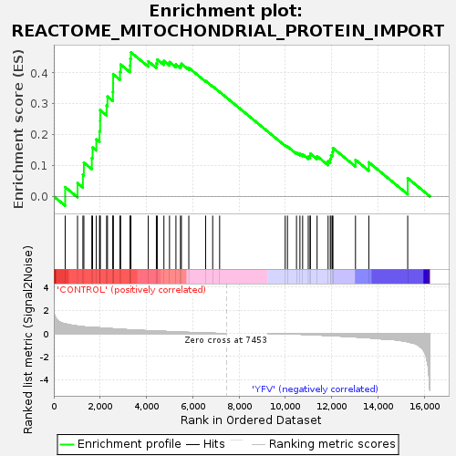
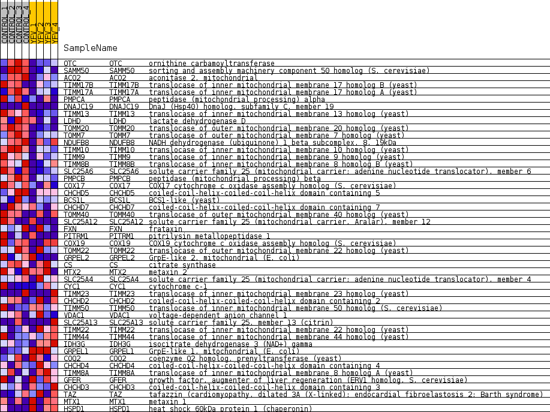
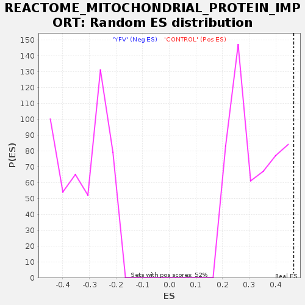

| Dataset | MATRIZ_GSE99081_collapsed_to_symbols.gsea_CLASE_99081.cls#CONTROL_versus_YFV |
| Phenotype | gsea_CLASE_99081.cls#CONTROL_versus_YFV |
| Upregulated in class | CONTROL |
| GeneSet | REACTOME_MITOCHONDRIAL_PROTEIN_IMPORT |
| Enrichment Score (ES) | 0.46666643 |
| Normalized Enrichment Score (NES) | 1.4388858 |
| Nominal p-value | 0.057803467 |
| FDR q-value | 1.0 |
| FWER p-Value | 1.0 |

| SYMBOL | TITLE | RANK IN GENE LIST | RANK METRIC SCORE | RUNNING ES | CORE ENRICHMENT | |
|---|---|---|---|---|---|---|
| 1 | OTC | ornithine carbamoyltransferase | 491 | 0.837 | 0.0299 | Yes |
| 2 | SAMM50 | sorting and assembly machinery component 50 homolog (S. cerevisiae) | 1024 | 0.637 | 0.0430 | Yes |
| 3 | ACO2 | aconitase 2, mitochondrial | 1256 | 0.582 | 0.0706 | Yes |
| 4 | TIMM17B | translocase of inner mitochondrial membrane 17 homolog B (yeast) | 1298 | 0.573 | 0.1094 | Yes |
| 5 | TIMM17A | translocase of inner mitochondrial membrane 17 homolog A (yeast) | 1642 | 0.503 | 0.1244 | Yes |
| 6 | PMPCA | peptidase (mitochondrial processing) alpha | 1673 | 0.500 | 0.1586 | Yes |
| 7 | DNAJC19 | DnaJ (Hsp40) homolog, subfamily C, member 19 | 1835 | 0.500 | 0.1847 | Yes |
| 8 | TIMM13 | translocase of inner mitochondrial membrane 13 homolog (yeast) | 1975 | 0.487 | 0.2112 | Yes |
| 9 | LDHD | lactate dehydrogenase D | 1999 | 0.484 | 0.2447 | Yes |
| 10 | TOMM20 | translocase of outer mitochondrial membrane 20 homolog (yeast) | 2002 | 0.483 | 0.2794 | Yes |
| 11 | TOMM7 | translocase of outer mitochondrial membrane 7 homolog (yeast) | 2280 | 0.444 | 0.2942 | Yes |
| 12 | NDUFB8 | NADH dehydrogenase (ubiquinone) 1 beta subcomplex, 8, 19kDa | 2318 | 0.438 | 0.3235 | Yes |
| 13 | TIMM10 | translocase of inner mitochondrial membrane 10 homolog (yeast) | 2551 | 0.405 | 0.3383 | Yes |
| 14 | TIMM9 | translocase of inner mitochondrial membrane 9 homolog (yeast) | 2561 | 0.403 | 0.3668 | Yes |
| 15 | TIMM8B | translocase of inner mitochondrial membrane 8 homolog B (yeast) | 2563 | 0.403 | 0.3958 | Yes |
| 16 | SLC25A6 | solute carrier family 25 (mitochondrial carrier; adenine nucleotide translocator), member 6 | 2858 | 0.358 | 0.4034 | Yes |
| 17 | PMPCB | peptidase (mitochondrial processing) beta | 2885 | 0.354 | 0.4273 | Yes |
| 18 | COX17 | COX17 cytochrome c oxidase assembly homolog (S. cerevisiae) | 3295 | 0.310 | 0.4244 | Yes |
| 19 | CHCHD5 | coiled-coil-helix-coiled-coil-helix domain containing 5 | 3305 | 0.309 | 0.4461 | Yes |
| 20 | BCS1L | BCS1-like (yeast) | 3330 | 0.306 | 0.4667 | Yes |
| 21 | CHCHD7 | coiled-coil-helix-coiled-coil-helix domain containing 7 | 4079 | 0.237 | 0.4375 | No |
| 22 | TOMM40 | translocase of outer mitochondrial membrane 40 homolog (yeast) | 4428 | 0.209 | 0.4311 | No |
| 23 | SLC25A12 | solute carrier family 25 (mitochondrial carrier, Aralar), member 12 | 4467 | 0.205 | 0.4435 | No |
| 24 | FXN | frataxin | 4754 | 0.179 | 0.4388 | No |
| 25 | PITRM1 | pitrilysin metallopeptidase 1 | 4996 | 0.159 | 0.4354 | No |
| 26 | COX19 | COX19 cytochrome c oxidase assembly homolog (S. cerevisiae) | 5273 | 0.132 | 0.4278 | No |
| 27 | TOMM22 | translocase of outer mitochondrial membrane 22 homolog (yeast) | 5469 | 0.115 | 0.4241 | No |
| 28 | GRPEL2 | GrpE-like 2, mitochondrial (E. coli) | 5509 | 0.113 | 0.4298 | No |
| 29 | CS | citrate synthase | 5829 | 0.090 | 0.4165 | No |
| 30 | MTX2 | metaxin 2 | 6556 | 0.035 | 0.3742 | No |
| 31 | SLC25A4 | solute carrier family 25 (mitochondrial carrier; adenine nucleotide translocator), member 4 | 6860 | 0.017 | 0.3567 | No |
| 32 | CYC1 | cytochrome c-1 | 7160 | 0.002 | 0.3384 | No |
| 33 | TIMM23 | translocase of inner mitochondrial membrane 23 homolog (yeast) | 9990 | -0.025 | 0.1655 | No |
| 34 | CHCHD2 | coiled-coil-helix-coiled-coil-helix domain containing 2 | 10088 | -0.030 | 0.1617 | No |
| 35 | TIMM50 | translocase of inner mitochondrial membrane 50 homolog (S. cerevisiae) | 10479 | -0.058 | 0.1418 | No |
| 36 | VDAC1 | voltage-dependent anion channel 1 | 10627 | -0.069 | 0.1376 | No |
| 37 | SLC25A13 | solute carrier family 25, member 13 (citrin) | 10744 | -0.080 | 0.1362 | No |
| 38 | TIMM22 | translocase of inner mitochondrial membrane 22 homolog (yeast) | 10986 | -0.100 | 0.1286 | No |
| 39 | TIMM44 | translocase of inner mitochondrial membrane 44 homolog (yeast) | 11064 | -0.107 | 0.1315 | No |
| 40 | IDH3G | isocitrate dehydrogenase 3 (NAD+) gamma | 11078 | -0.108 | 0.1384 | No |
| 41 | GRPEL1 | GrpE-like 1, mitochondrial (E. coli) | 11368 | -0.135 | 0.1303 | No |
| 42 | COQ2 | coenzyme Q2 homolog, prenyltransferase (yeast) | 11843 | -0.178 | 0.1139 | No |
| 43 | CHCHD4 | coiled-coil-helix-coiled-coil-helix domain containing 4 | 11937 | -0.187 | 0.1216 | No |
| 44 | TIMM8A | translocase of inner mitochondrial membrane 8 homolog A (yeast) | 11971 | -0.190 | 0.1333 | No |
| 45 | GFER | growth factor, augmenter of liver regeneration (ERV1 homolog, S. cerevisiae) | 12032 | -0.196 | 0.1437 | No |
| 46 | CHCHD3 | coiled-coil-helix-coiled-coil-helix domain containing 3 | 12052 | -0.198 | 0.1567 | No |
| 47 | TAZ | tafazzin (cardiomyopathy, dilated 3A (X-linked); endocardial fibroelastosis 2; Barth syndrome) | 13026 | -0.303 | 0.1185 | No |
| 48 | MTX1 | metaxin 1 | 13602 | -0.381 | 0.1104 | No |
| 49 | HSPD1 | heat shock 60kDa protein 1 (chaperonin) | 15281 | -0.727 | 0.0592 | No |

